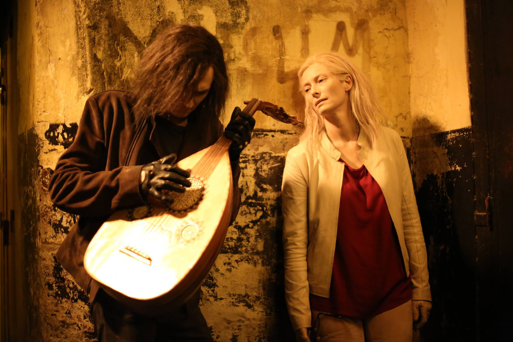
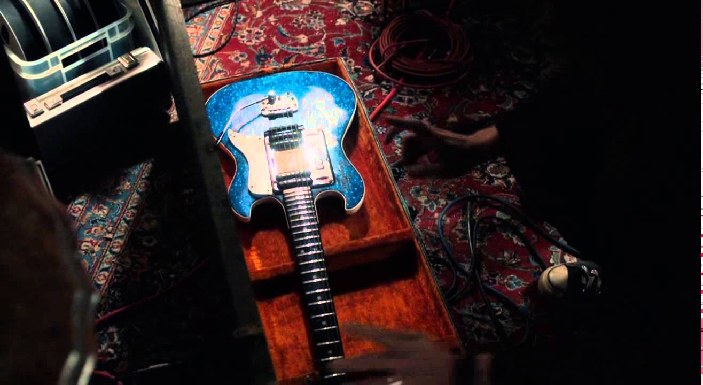

The director and his band collaborated with a lute player named Jozef van Wissem who met on the streets of the lower east side in New York.
In the movie we see a lute that Eve gifts to Adam because they had to leave all his other instruments in Detroit.
While Adam is waiting for Eve to get the beautiful instrument, he finds a beautiful voice in a small cafe in Morocco. Her name is Yasmine Hamdan, a Lebanese singer that separated from her band Soap Kills in 2013, the year the movie came out. In the cafe, she is singing the song, Hal.
Adam quote